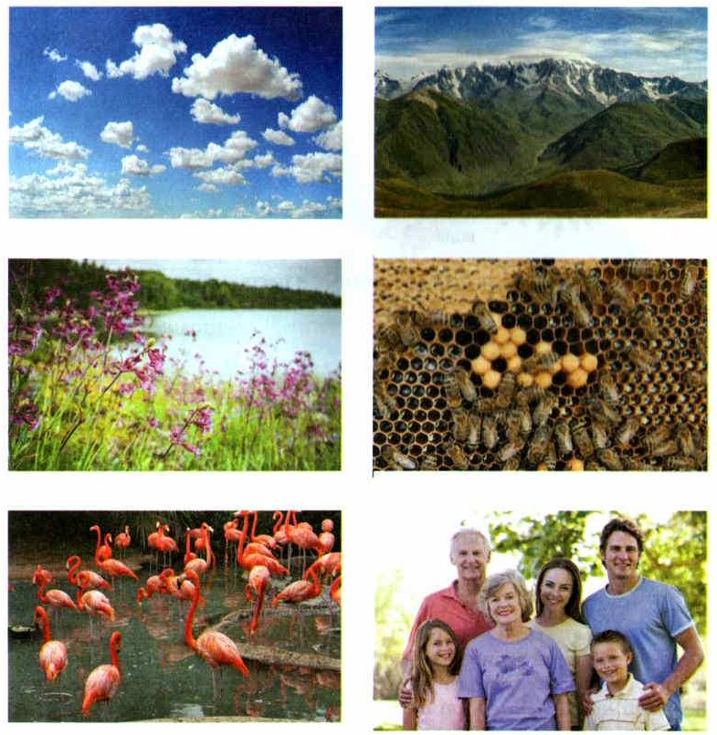
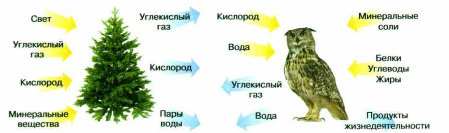
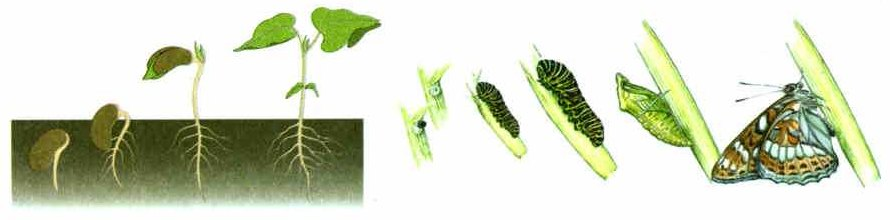
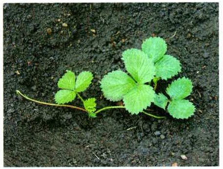
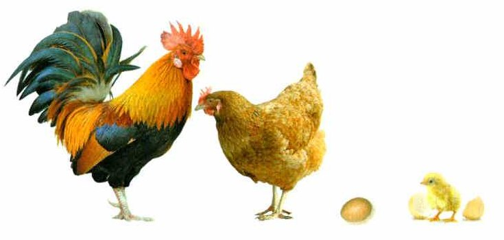
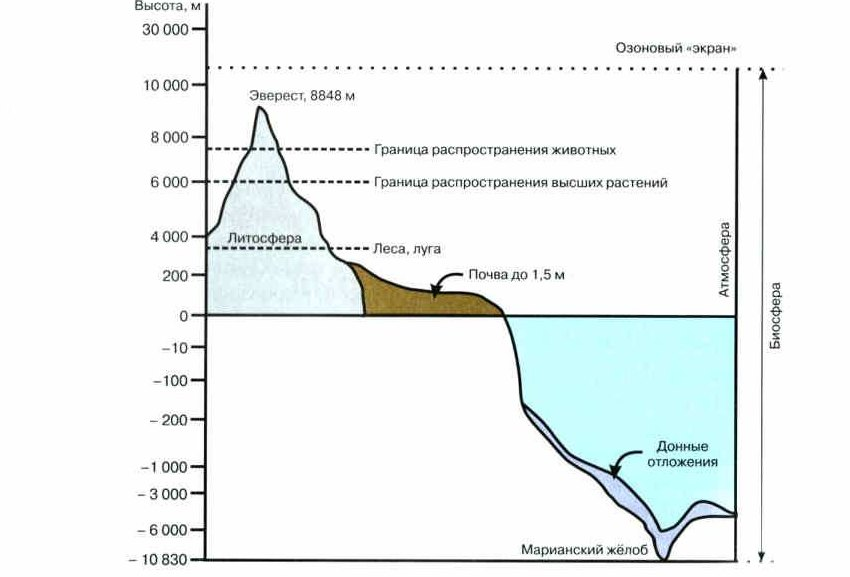
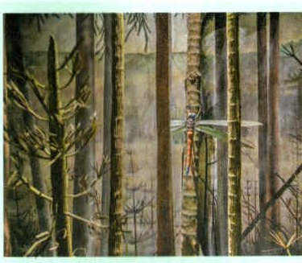
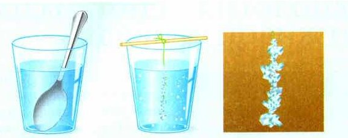

Объекты живой и неживой природы
Нас везде окружают разные предметы. Учёные называют их объектами. Вода, воздух, горы, растения, животные, машины, книги, дома…
Одни объекты сделал человек: машины, книги, дома. Другие существуют сами, без человека. Вот они и называются объектами природы.
Объекты природы бывают живые и неживые. Воздух, облака, горы и камни — неживая природа. Деревья, травы, грибы, насекомые, рыбы, птицы, звери и сам человек — живая (рис. 1).
Кажется, всё просто. Но как именно мы отличаем живое от неживого? Чтобы ответить, надо понять, что такое жизнь.
На улице, дома, в школе — везде и всюду человека окружают различные предметы или, как говорят, объекты (от лат. объектум — предмет) окружающего мира. Среди них: вода, воздух, горные породы, растения, животные, автомобили, книги, различные постройки и многое другое. Одни из них изготовлены или построены человеком, а другие существовали и существуют в природе независимо от его хозяйственной деятельности. Именно их называют объектами природы.
Сравним перечисленные выше объекты. Что общего между ними и чем они различаются? Почему одни из них мы называем живыми, а другие относим к объектам неживой природы.
На первый взгляд кажется, что ответ очевиден. Так, воздух, облака, горы и камни вы отнесёте к объектам неживой природы, а деревья, кустарники, травы, грибы, насекомых, рыб, птиц, зверей и самого человека — к объектам живой природы (рис. 1).
А на основании чего мы разделили эти объекты на две группы? Чтобы ответить на этот вопрос, необходимо определить, что такое жизнь.

▲ Найди на фото объекты неживой природы и объекты живой природы.
1. Чем объекты природы отличаются от машин и книг?
2. На какие две группы делят объекты природы? Куда попадут грибы, а куда — облака?
Понятие о жизни
Даже малыш скажет: камень неживой — он не двигается. А собака и кошка живые — они бегают.
Но дерево тоже не бегает — а оно живое. Оно растёт!
А теперь хитрость. Кристаллы соли в растворе тоже «растут». И сосулька зимой становится больше. Значит, рост бывает и у неживого.
Ещё хитрость. Живое дышит: берёт кислород и выделяет углекислый газ. Но и горящая свеча берёт кислород, а выделяет углекислый газ и тепло.
Вывод: по одному признаку живое от неживого не отличить. Граница между ними условна, если смотреть на свойства по отдельности. Поэтому дальше сравним живое и неживое внимательно.
Даже маленький ребёнок скажет, что камень неживой, так как он не может двигаться, а собака или кошка живые, они бегают. Деревья тоже живые, они не могут передвигаться, но они растут. Кристаллы в насыщенном растворе соли тоже могут «расти» и сосулька зимой увеличивается в размерах. Есть и другие примеры «роста» объектов неживой природы.
Можно сказать, что для живых организмов характерно дыхание, при котором происходят процессы обмена веществ и превращения энергии, но и при горении свечи кислород поглощается, а выделяются углекислый газ (происходит обмен веществ) и энергия в виде тепла. Таким образом, если учитывать отдельные свойства объектов живой и неживой природы, то грань между ними условна. Рассмотрим её, установив основные черты сходства и различий между объектами живой и неживой природы.
кристалл растёт, свеча «дышит» — но они не живые
клетки, обмен веществ, рост, развитие, размножение, раздражимость
Живое узнают только по набору признаков.
3. Какие примеры «роста» и «дыхания» у неживого приводит учебник?
4. Почему учебник пишет «расти» про кристалл в кавычках?
Сходство и различия живого и неживого
Что общего у камня и у птицы? И то, и другое построено из одних и тех же «кирпичиков» — химических элементов.
А разница — в том, сколько каких элементов. Тела живой природы на 98% состоят всего из четырёх элементов: углерода, кислорода, азота и водорода.
У неживого этих элементов может не быть совсем. Оно может состоять из других элементов — и даже из одного.
Основные черты сходства объектов живой и неживой природы заключаются в том, что все они построены из одних и тех же структурных компонентов — химических элементов. Но в объектах живой и неживой природы различно их соотношение. Тела живой природы на 98% состоят из четырёх элементов — углерода, кислорода, азота и водорода. Тела неживой природы могут не иметь в своём составе этих элементов, а состоять из других элементов и даже из одного.
5. Что общего у камня и у птицы, если смотреть на химические элементы? А в чём разница?
Признаки живого
У всего живого есть общие признаки.
Клетки. Тело живого состоит из клеток — крошечных частичек. У клетки есть все признаки живого. Исключение — вирусы: у них клеток нет. Это возбудители болезней растений, животных и человека. Проявляют себя вирусы, только когда попадают в клетки живого организма.
Кроме клеток, у живого есть набор свойств, которого нет у неживого: движение, обмен веществ, рост, развитие, размножение, раздражимость и другие.
Обмен веществ — самое важное. Это сразу три процесса: питание, дыхание и выделение. В организм поступают вещества, в нём вырабатывается энергия, а ненужное и вредное удаляется. Пока идёт обмен веществ, организм живёт и может всё остальное (рис. 2).
Рост и развитие. Рост — когда становится больше (количественные изменения). Развитие — когда становится другим (качественные изменения) (рис. 3). Немного похожее бывает и у неживого. Но только у живого развитие идёт по порядку, шаг за шагом — по наследственной информации, которая записана в клетках.
Размножение. При размножении организмы передают детям свои признаки и свойства — из поколения в поколение (рис. 4, 5). Как это устроено, вы узнаете в старших классах.
Все эти свойства вместе есть только у живого. А жизнь — это, пожалуй, самое сложное явление в мире.
Все объекты живой природы имеют ряд общих свойств и признаков.
Они имеют клеточное строение, то есть их тела состоят из особых структур — клеток. Клетка представляет собой основную структурную единицу живого организма, которой присущи все признаки живого. Исключение составляют вирусы — опасные возбудители многих заболеваний растений, животных и человека. Они не имеют клеточного строения, и их жизнедеятельность проявляется только тогда, когда они проникают в клетки живого организма.
Для всех объектов живой природы характерна совокупность так называемых жизненных свойств, отсутствующая у объектов неживой природы. К ним, кроме клеточного строения, относятся движение, обмен веществ, рост, развитие, размножение, раздражение и др.
Самым важным проявлением жизнедеятельности является обмен веществ, присущий всем объектам живой природы (рис. 2). Именно это свойство обеспечивает им возможность осуществлять остальные процессы жизнедеятельности. Объекты живой природы осуществляют жизнедеятельность до тех пор, пока в них извне поступают питательные вещества, вырабатывается энергия и из них удаляются ненужные и вредные продукты жизнедеятельности.
Обмен веществ у разных объектов живой природы включает в себя несколько взаимосвязанных процессов, обеспечивающих в них непрерывный поток вещества и энергии, необходимой для осуществления жизнедеятельности. Среди них: питание, дыхание и выделение.
Объекты живой природы способны расти и развиваться. Количественные изменения в структуре любого природного тела называют ростом, а качественные — развитием (рис. 3). Оба этих свойства могут встречаться и у объектов неживой природы. Но только объектам живой природы свойственно упорядоченное, постепенное и последовательное развитие, связанное с реализацией наследственной информации, заложенной в их клетках.
В процессе размножения организмы передают свои признаки, свойства и особенности развития из поколения в поколение (рис. 4, 5). Механизм передачи наследственных признаков един для всех живых организмов, но с ним вы познакомитесь в более старших классах.
Таким образом, все перечисленные выше свойства и ряд других свойств в своей совокупности характерны только для живых организмов, а жизнь — это, пожалуй, самое сложное явление в окружающем нас мире.


количественные изменения: становится больше
качественные изменения: становится другим
Палочник после линьки — тот же палочник, только больше: это рост. Гусеница стала бабочкой: это развитие.


6. Почему вирусы — исключение среди живого?
7. Учебник называет обмен веществ самым важным проявлением жизнедеятельности. Почему?
8. Кристалл тоже растёт. Какое развитие бывает только у живого?
Живая и неживая природа — единое целое
Живое и неживое сильно отличаются. Живое устроено гораздо сложнее, и всё в нём работает слаженно.
Но живое и неживое тесно связаны. Во-первых, они построены из одних и тех же химических элементов.
Во-вторых, если разрушить неживую природу, погибнет и всё живое. Когда человек действует в природе неразумно и не думает о том, как всё связано, это может закончиться очень плохо — и прежде всего для самого человека.
Как мы видим, объекты живой и неживой природы значительно отличаются друг от друга. Прежде всего, живые организмы различаются сложностью строения и высокой организованностью протекающих в них процессов жизнедеятельности. Однако все они тесно связаны между собой. На это указывает, прежде всего, единство их химического состава.
Кроме того, уничтожение неживой природы неизбежно влечёт за собой гибель всего живого. Неразумная деятельность человека в природе, часто осуществляемая без учёта взаимозависимости её компонентов, может привести к очень серьёзным последствиям, опасным, прежде всего, для самого человека.
9. Что будет с живым, если разрушить неживую природу? Кому это опаснее всего?
Роль живого в природе
Первые живые организмы появились на Земле около 4 миллиардов лет назад.
Живое расселилось по планете — и у Земли появилась особая оболочка, биосфера (рис. 6). В неё входят нижний слой воздуха (атмосфера), вода (гидросфера), почва и верхний слой твёрдой земли (литосфера).
Сверху жизнь ограничивает озоновый экран — слой газа озона на высоте 15—20 км. Он задерживает опасные для живого ультрафиолетовые лучи солнца. В океане живые организмы есть даже на дне впадин — на глубине 10—11 км. А под землёй бактерии местами живут на глубине трёх километров и больше.
Сложим: 15—20 км вверх и 10—11 км вниз — получается, что жизнь занимает слой толщиной около 30 километров.
Учёный Владимир Иванович Вернадский первым сказал: живые организмы — главная сила, которая меняет Землю. Биосфера — это не просто место, где есть жизнь. Это результат работы живых организмов.
По мнению учёных, первые живые организмы появились на нашей планете около 4 млрд лет назад.
С появлением живых организмов и их распространением появилась особая оболочка Земли — биосфера (от греч. биос — жизнь и сфера — шар) (рис. 6). Биосфера включает нижние слои атмосферы, гидросферу, почву, верхний слой литосферы. Верхняя граница распространения жизни определяется озоновым экраном — слоем газа озона на высоте 15—20 км. Он задерживает губительные для живых организмов ультрафиолетовые лучи солнца. В океанах живые организмы встречаются на дне впадин даже на глубине 10—11 км. В литосфере жизнь (бактерии) местами проникает на глубину до трёх и более километров.
Первым, кто указал на роль живых организмов как главнейшей преобразующей силы планеты Земля, был выдающийся отечественный учёный Владимир Иванович Вернадский. Именно он впервые отметил, что биосфера — это не только область распространения жизни, но и результат деятельности живых организмов на нашей планете.

Владимир Иванович Вернадский (1863—1945) — великий русский учёный, академик. Он создал учение о биосфере.
Вернадский показал: биосфера никогда не возвращается в прежнее состояние, она всё время меняется. Потому что живые организмы постоянно влияют на всё вокруг.
Он придумал слово «ноосфера» (от греч. ноос — разум) — так он назвал биосферу, которую изменил человек. Вернадский верил, что люди будут действовать разумно и сохранят равновесие и гармонию в природе.
На жизнь на Земле влияет и космос. Учёный Александр Леонидович Чижевский (1897—1964) выяснил, что активность Солнца связана с тем, что происходит в биосфере. Его считают одним из создателей гелиобиологии — науки о том, как Солнце влияет на живые организмы, в том числе на здоровье человека.
Владимир Иванович Вернадский (1863—1945) — выдающийся отечественный учёный, академик, основоположник биогеохимии, разработал учение о биосфере.
В своих научных работах он показал, что биосфера — живая оболочка Земли — никогда не возвращается в своё прежнее состояние, поэтому всё время изменяется. Это объясняется тем, что живые организмы оказывают постоянное геохимическое влияние на окружающий мир.
Вернадский ввёл в своё учение о биосфере также понятие «ноосфера» (от греч. ноос — разум), как видоизменённая в результате человеческого воздействия биосфера. Вернадский верил, что совместные разумные действия всего человечества будут направлены не только на удовлетворение своих потребностей, но и на создание равновесия и гармонии в природе.
Когда мы говорим о единстве живой и неживой природы, надо учитывать, что на процессы, происходящие в биосфере нашей планеты, оказывают влияние и космические физические факторы. В начале XX века российский учёный Александр Леонидович Чижевский (1897—1964), изучая влияние физических космических факторов на процессы в живой природе, установил взаимосвязь циклов активности Солнца с явлениями, происходящими в биосфере.
Чижевского считают одним из основоположников космической, или гелиобиологии — науки, изучающей влияние факторов активности Солнца на живые организмы, в том числе и на здоровье человека.
10. Где проходит верхняя граница биосферы и почему именно там?
11. Что Вернадский впервые заметил про биосферу?
12. Почему, по Вернадскому, биосфера никогда не возвращается в прежнее состояние?
Итоги и «Моя лаборатория»
Объекты природы: живые и неживые · Жизнь · Свойства жизни · Биосфера · Озоновый экран
- Почему сложно дать определение понятия «жизнь»?
- В чём заключается различие химической организации тел живой и неживой природы?
- Каковы основные свойства живых тел природы (признаки живого)?
- Какие примеры внешне схожих проявлений отдельных черт, свойственных живому, вы можете привести и в неживой природе?
- Какова роль живого в природе?
Почему мы можем утверждать, что живая и неживая природа представляют собой единое целое?
Прочитайте дополнительный текст. Что такое графит? Из чего он образуется? Можно ли сказать, что графит — это объект живой природы? Обоснуйте свой ответ. Составьте план (не менее трёх пунктов) рассказа о том, как образуется графит.
Посмотри на простой карандаш. Серый стержень внутри — это графит, природный материал. Он получился из остатков деревьев, которые росли на Земле сотни миллионов лет назад (рис. 7).
Как это было? Погибшие растения засыпало слоями горных пород. Под тяжестью пород они сжимались, а без воздуха за тысячи лет превращались в бурый уголь.
Прошли ещё миллионы лет. Глубоко под землёй, под большим давлением и при высокой температуре, бурый уголь стал каменным углём. А под ещё большим давлением и жаром каменный уголь превратился в графит.
Посмотрите на простой карандаш с графитовым стержнем внутри. Графит — это природный материал. В его основе — остатки деревьев, росших на Земле сотни миллионов лет назад (рис. 7).
Случалось так, что погибшие растения оказывались погребёнными под пластами осадочных пород. Под давлением осадочных пород они спрессовывались и за тысячелетия без доступа кислорода превращались в бурый уголь. Проходили ещё миллионы лет. Свойства бурого угля, оказавшегося на большой глубине, под действием высокого давления и высоких температур, менялись. Бурый уголь становился каменным углём. Постепенно под действием ещё более высокого давления и ещё более высоких температур образовывались новые породы. Каменный уголь превращался в графит.

Шесть главных свойств живого — коротко:
1. Тела живой природы состоят из клеток.
2. Каждый организм — биологическая система (от греч. система — целое из связанных частей): все части работают вместе. Такая система открытая — ей нужны энергия и питательные вещества извне.
3. Всё живое способно к обмену веществ: дыхание, питание, выделение.
4. Живое растёт и развивается — по порядку, по наследственной информации.
5. Живое размножается и передаёт свои признаки потомству.
6. Живое реагирует на изменения вокруг — это раздражимость. Мышка, заметив кошку, убегает. Растения поворачивают листья и цветки к свету.
Характеризовать тела живой природы можно, раскрыв основные свойства живого.
1. Тела живой природы имеют клеточное строение.
2. Тела живой природы представляют собой биологические системы (от греч. система — целое, состоящее из взаимосвязанных частей). Совместная согласованная работа отдельных частей любой системы является важнейшим условием её существования как единого целого. Стоит обратить внимание, что все биологические системы являются открытыми. Для существования живых организмов необходимо поступление энергии (солнечной или химической) и питательных веществ из окружающей среды.
3. Всё живое способно к обмену веществ. Тела живой природы осуществляют свою жизнедеятельность до тех пор, пока в них извне не только поступают энергия и питательные вещества, но и удаляются ненужные, а иногда и вредные продукты жизнедеятельности. Обмен веществ обеспечивается такими процессами, как дыхание, питание и выделение.
4. Тела живой природы растут и развиваются. Количественные изменения в структуре любого природного тела называют ростом, а качественные — развитием. Оба этих свойства могут встречаться у объектов как живой, так и неживой природы. Но только телам живой природы свойственно упорядоченное, постепенное и последовательное развитие, связанное с реализацией заложенной в них наследственной информации.
5. Всё живое способно к самовоспроизведению. Тела живой природы способны появляться только в результате процесса размножения. При этом все организмы способны передавать свои признаки, свойства и особенности развития из поколения в поколение.
6. Тела живой природы реагируют на изменение окружающей их среды. Это свойство называют раздражимостью. Разумеется, скорость ответной реакции и собственно её проявление у разных объектов живой природы значительно различаются. Например, мышка, заметившая охотящуюся на неё кошку, стремится быстро убежать от грозящей ей опасности. Растения же изменяют направление роста и поворачивают листья и соцветия по направлению к свету.
Кристаллы соли в насыщенном растворе растут. Проверь сама!
Цель: увидеть, как растут кристаллы поваренной соли.
Понадобится: соль (лучше морская без добавок), кипячёная отстоявшаяся вода, чистый стакан или банка, деревянная палочка, салфетки, марля, рыболовная леска, карандаш, бесцветный лак.
Ход работы:
1. Раствори 40 г соли в 100 мл горячей воды. Дай остыть и процеди через марлю.
2. Привяжи к леске маленький кристаллик соли. Другой конец лески привяжи к карандашу и положи его на стакан, чтобы кристаллик висел в растворе (рис. 8).
3. Накрой салфеткой и поставь в тёмное место, где не бывает перепадов температуры. Не тряси и не переставляй.
4. Раз в неделю доливай свежий насыщенный раствор — так кристалл вырастет крупнее. Готовый кристалл промокни и покрой лаком.
5. Регулярно записывай и фотографируй наблюдения. Потом покажи в классе и обсудите: можно ли считать кристаллы телами живой природы?
В насыщенном растворе поваренной соли образуются кристаллы, которые увеличиваются в размерах, то есть растут. Чтобы убедиться в этом, проведите опыт по выращиванию соляных кристаллов.
Цель работы: увидеть рост кристаллов поваренной соли.
Материалы и оборудование: поваренная соль (лучше морская без добавок); вода (дистиллированная или прокипячённая, отстоявшаяся и отфильтрованная обычная вода); чистая стеклянная ёмкость (стакан, банка); деревянная палочка для помешивания раствора, бумажные салфетки, фильтровальная бумага или марля, лак для покрытия готового соляного кристалла.
Ход работы
1. В стеклянной ёмкости приготовьте насыщенный солевой раствор из 100 мл горячей воды и 40 г соли, дайте жидкости остыть и отфильтруйте её через фильтровальную бумагу или свёрнутую в несколько слоёв марлю.
2. К рыболовной леске привяжите небольшой кристаллик соли и опустите в приготовленный соляной раствор. Если кристаллика соли нет, используйте любой пластмассовый твёрдый предмет, предварительно замоченный в приготовленном растворе и высушенный. Другой конец лески привяжите к перекладине (например, к карандашу, ручке или деревянной палочке), которая будет шире горлышка выбранной посуды. Этот предмет будет фиксироваться на ёмкости с раствором, чтобы маленький кристаллик на леске был в подвешенном состоянии (рис. 8).
3. Накройте полученную конструкцию салфеткой или тканью и поставьте при комнатной температуре в тёмное место, где в вашем помещении наименее заметны перепады температуры. Исключите встряхивание и передвижения ёмкости.
4. По мере роста кристалла содержание соли в окружающей его жидкости будет уменьшаться. Если вы хотите вырастить кристалл достаточно крупных размеров, то раз в неделю добавляйте в ёмкость насыщенный соляной раствор. Когда кристалл вырастет до необходимых размеров, аккуратно выньте его из жидкости, выложите на чистую бумажную салфетку и осторожно промокните мягкой тканью. Если хотите сохранить хрупкий кристалл, то для придания ему определённой прочности, покройте его бесцветным лаком для ногтей.
5. Регулярно записывайте и фотографируйте свои наблюдения. После окончания наблюдений, оформите и представьте их в классе. Обсудите, можно ли считать кристаллы телами живой природы?

- Прочитай название параграфа — в нём главное.
- Прочитай вопросы перед параграфом и попробуй на них ответить.
- Прочитай вопросы в конце параграфа — они покажут, что самое важное.
- Прочитай текст и составь план. Для каждой части спрашивай себя: «О чём здесь говорится?» и «Что об этом говорится?». Пункты плана — короткие, главные и связанные по смыслу.
- Новые термины выучи, главное запомни и умей подтвердить примерами.
- Ответь на вопросы в конце параграфа и выполни задания.
- Кратко перескажи параграф.
Проверь себя
Ошиблась — ничего страшного, попробуй другую кнопку.
Юкси
У Юкси есть все признаки живого.
Кристалл кварца из маминой коллекции
Кристалл может расти, но других признаков живого у него нет.
Гриб в лесу
Грибы — живая природа.
Облако
Облака — неживая природа.
Сосулька, которая растёт зимой
Рост бывает и у неживого. Один признак — ещё не жизнь.
Палочник
Палочник ест, растёт, линяет, размножается.
Горящая свеча
Свеча «дышит» кислородом, но живой от этого не становится.
Графитовый стержень карандаша
Графит получился из древних деревьев, но сейчас это неживая природа.
Люся стала больше, чем была малышкой
Та же Люся, только больше — количественные изменения.
Из куколки вышла бабочка
Совсем новый облик — качественные изменения.
Палочник после линьки стал длиннее
Форма та же, размер больше.
Из яйца муравья вышла личинка
Яйцо стало чем-то другим — развитие.
Из семени появился росток с листьями
Как на рис. 3: семя превратилось в растение.
Юкси убегает в свой уголок, когда рядом что-то движется
Ответ на изменение вокруг — раздражимость.
У мадагаскарских тараканов появилось много маленьких
Появилось потомство — размножение.
Люся съела корм, попила воды и оставила помёт
Питание и выделение — части обмена веществ.
Палочник стал больше, чем был
Количественные изменения — рост.
Растение поворачивает листья к свету
Пример из учебника: растение отвечает на свет.
1. Что из этого — объект живой природы?
2. Из каких элементов на 98% состоят тела живой природы?
3. У кого нет клеточного строения?
4. Рост — это…
5. Что ограничивает биосферу сверху?
6. Кто первым сказал, что биосфера — результат деятельности живых организмов?
Расскажи вслух
Признаки живого
- Клеточное строение (исключение — вирусы).
- Обмен веществ — самое важное: питание, дыхание, выделение.
- Рост и развитие, размножение, раздражимость; все вместе — только у живого.
Почему по одному признаку живое не отличить
- Кристаллы соли и сосулька «растут».
- Свеча при горении поглощает кислород и выделяет углекислый газ и тепло.
- Поэтому живое определяют по совокупности всех свойств.
Рост и развитие
- Рост — количественные изменения, развитие — качественные (рис. 3).
- Похожее бывает и у неживого.
- Только у живого развитие упорядоченное и связано с наследственной информацией в клетках.
Живая и неживая природа — единое целое
- Живое и неживое построено из одних химических элементов.
- Уничтожение неживой природы приведёт к гибели живого.
- Неразумная деятельность человека опасна прежде всего для самого человека.
Что такое биосфера
- Оболочка Земли, где есть жизнь; появилась вместе с живыми организмами (около 4 млрд лет назад).
- Границы: озоновый экран 15—20 км вверху, дно впадин 10—11 км, бактерии до 3 км под землёй.
- Вернадский: биосфера — результат деятельности живых организмов.